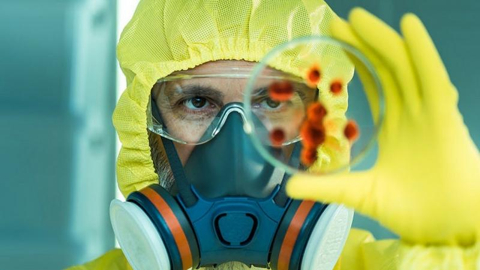

Зачем Америке биолаборатории по всему миру и при чем тут коронавирус

Сергей Саенко, международный обозреватель
Как заявил на днях в интервью газете «Коммерсант» секретарь Совета безопасности России Николай Патрушев у Москвы есть основания полагать, что в лабораториях на постсоветском пространстве разрабатывают биологическое оружие.В частности, он призвал обратить самое пристальное внимание на т.н. исследовательские центры по борьбе с опасными заболеваниями, где, по мнению секретаря Совбеза, могут проводиться не только и не столько мирные исследования.Кому выгодно изменение глобальной системы безопасности – догадаться не так трудно.«Уши» Соединенных Штатов видны невооруженным глазом.
Николай Патрушев отметил, что биолаборатории, находящиеся под контролем США, как на дрожжах растут в основном у российских и китайских границ.«Правда, власти тех стран, где эти объекты размещены, не имеют реального понятия, что происходит в их стенах.Конечно, у нас и наших китайских партнеров возникают вопросы.Нам говорят, что у наших границ функционируют мирные санэпидстанции, но они почему-то больше напоминают Форт-Детрик в Мэриленде, где американцы десятилетиями работают в области военной биологии», – заявил Патрушев.К слову, еще в 2019 году, секретарь Совбеза России указывал, что по всему миру США ввели в эксплуатацию более 200 биологических лабораторий.
Как сообщила на минувшей неделе китайская газета Global Times, после утверждения Николая Патрушева о том, что Соединенные Штаты разрабатывают биологическое оружие в лабораториях, находящихся вблизи границ России и Китая, растет число призывов к проверке таинственных американских биолабораторий.По мнению экспертов, инспекция лабораторий США может позволить получить данные о происхождении коронавируса.Однако Вашингтон игнорирует вопросы международного сообщества по поводу инспекций своих загадочных биолабораторий.
В этой связи в минувший четверг официальный представитель МИД КНР Чжао Лицзянь призвал США ответить на высказанные озабоченности и предоставить полные данные о деятельности в области разработки биологического оружия как внутри страны, так и за ее пределами.Он также призвал Вашингтон перестать блокировать попытки создания механизмов верификации, предусмотренные Конвенцией о запрещении разработки, производства и накопления запасов бактериологического (биологического) и токсинного оружия и об их уничтожении (КБТО), одобренной Генассамблеей ООН в 1971 году.
Здесь следует отметить, что беспокойство Москвы и Пекина по поводу американских лабораторий вблизи границ России и Китая не лишено оснований.Ведь США создали биолаборатории в 25 странах по всему миру – на Ближнем Востоке, в Африке, Юго-Восточной Азии, на территории бывшего Советского Союза – только на Украине их 16.Помимо этого они есть в Грузии (чего стоит один только Центра Ричарда Лугара в пригороде Тбилиси), Азербайджане, Армении, Молдове, Казахстане, Узбекистане и Таджикистане.В некоторых местах, где расположены такие лаборатории, были отмечены масштабные вспышки кори, а также других опасных инфекционных заболеваний.
Как считает авторитетный израильский военно-политический эксперт Яков Кедми, цели биологических лабораторий США легко определить по условиям и принципам их работы.По его мнению, главной характеристикой американских биолабораторий возле границ России является их подчинение Пентагону, что полностью перечеркивает аргументы Вашингтона о «мирной» природе этих объектов.Если бы лаборатории контролировались научными организациями и международными структурами, то угрозу с их стороны можно было оспорить, но эти центры напрямую подчинены военному командованию Соединенных Штатов и им финансируются.
Кедми убежден, что министерство обороны любой страны не станет тратить огромные средства на сугубо мирные научные исследования.При этом эксперт отмечает, что для своих биолабораторий США намеренно выбирают государства, которыми могут управлять фактически напрямую.Примером такой страны является Украина, где все стратегические объекты контролируются США, а руководство государства может делать только то, на что получает соответствующие разрешения и указания из Вашингтона.
Не секрет, что Россия и Китай, как главные стратегические противники Соединенных Штатов, являются первоочередными целями и именно поэтому Вашингтон создал эти лаборатории в соседних с ними странами, откуда их можно атаковать, применяя биологическое или бактериологическое оружие.В этой связи эксперты выделяют несколько возможных сценариев использования биолабораторий США, при которых они несут потенциальную опасность для России и Китая.Первый вариант – эпидемиологическая атака, предусматривающая вброс с территории одного из соседних государств опасного вируса на их территории.Второй – организация масштабной эпидемии на территории одного из соседних государств с последующим обвинением в этом Москвы и Пекина.Третий – технологическая катастрофа в местах разработки США биологического оружия.Каждый из этих вариантов может нанести непоправимый урон жителям России и Китая.
Что это действительно так, наглядно продемонстрировала бушующая в мире вот уже второй год пандемия COVID-19.Коронавирус поднял проблему уязвимости человечества к различным инфекциям, в том числе искусственного происхождения.А значит, это сразу поставило вопрос об имеющихся в мире разработках биологического и бактериологического оружия.По этой причине сразу возникает вопрос о биолабораториях США, разбросанных по всему миру, где под руководством военных ведутся работы, характер которых тщательно скрывается от мировой общественности.Причина проста – Соединенные Штаты попросту скрывают свою программу биологического оружия.
При этом не исключено, что американцы создают не просто биологическое оружие, а этническое оружие, направленное исключительно на истребление в первую очередь россиян и китайцев.И если США являются своего рода правообладателями результатов работы биолабораторий, может в условиях современной угрозы пандемии COVID-19 им стоит задуматься о безопасности собственной нации, а не продолжать изобретать способы уничтожения других народов?Ведь сегодня Соединенные Штаты по количеству зараженных коронавирусом и смертей от него прочно держат «пальму первенства» в мире.
источник
Posted On: 2021-04-13T21:00:00
Content Date: 2021-04-13
Download Date: 2021-05-30
Document ID: L0C04CL5A